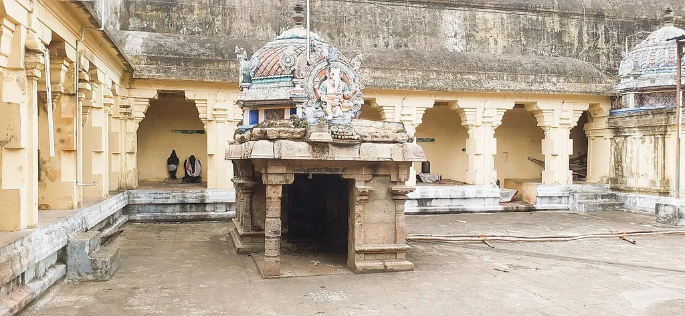

Legend places the idol's arrival at 642 CE; the temple itself is estimated 1,000–2,000 years old
By tradition, the Pallava general Paranjothi brought this Ganesha idol back as war trophy after defeating the Chalukyas at their capital Vatapi (modern Badami, Karnataka) in 642 CE, installing it in his home village. Paranjothi is said to have then renounced warfare and become the Shaiva saint Siruthondar. No written war-booty records confirm the idol's origin — it survives as strong oral tradition rather than documented fact, worth stating as such.
Sources verified across multiple references; written in original wording.The village name Thiruchengattankudi ('cheng' = red) is linked to a separate legend of Ganapathi slaying the demon Gajamukhasuran here, the bloodshed reddening the land.
A rare human-faced (rather than elephant-faced) depiction of Ganesha — one of very few such forms in Tamil Nadu.
Presiding deity is Shiva (Uthrapathiswaraswamy), with the Vatapi Ganapathi shrine given particular prominence within the complex; ~32 inscriptions recorded on site.
Thiruvarur district; nearest railway station Thanjavur Junction, nearest airport Trichy.
This section of iamsaravofficial.com (/temples) does not currently collect any personal information from visitors. No sign-up is required; there are no forms; cookies are not currently used.
Analytics tools (e.g. Google Analytics) or ads (Google AdSense) may be added in future. If added, they will collect only general usage data and will not personally identify you. This policy will be updated accordingly.
External links (including to other parts of iamsaravofficial.com) may be present; we are not responsible for their privacy policies.
Last updated: 30 August 2026Temple history, legend, and architecture content on this site is researched from multiple public sources and written in original wording — not copied verbatim from any single source.
The design, structure, and presentation of this site belong to iamsaravofficial.com. Quoting for educational purposes is welcome; wholesale copying and republishing of the site is not.
This site is provided "as is"; uninterrupted service is not guaranteed. These terms may change without prior notice.
Temple history and legend content reflects a synthesis of publicly available sources and oral/devotional tradition, and may include multiple regional variants where sources disagree. It should not be treated as the single authoritative or academically definitive account.
This site is not affiliated with, and is not endorsed by, any religious institution, temple administration, or government body. It is provided for cultural and educational purposes only. No guarantee is made as to complete historical accuracy.
Temples of Tamil Gods is a growing bilingual guide to Tamil Nadu's temple heritage — the Shiva Paadal Petra Sthalams, Vishnu Divya Desams, Murugan's Arupadaiveedu, the Navagraha circuit, and independently researched Ganesh, Amman, and Ayyappan temples.
Each entry is researched from multiple sources, written in original wording, and flagged honestly where sources disagree or a date is uncertain.
Created and maintained by Saravanakumar Murugan — iamsaravofficial.com